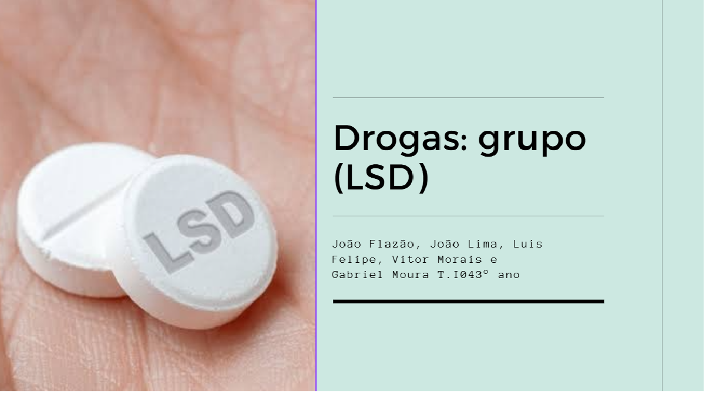
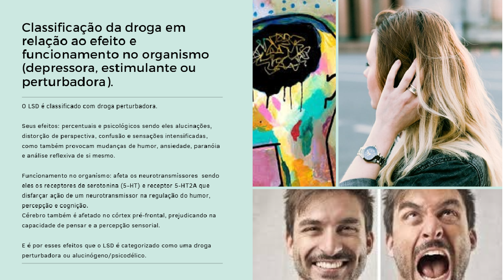

O trabalho mais marcante que realizei em Ciências da Natureza, carinhosamente apelidada de CNT, foi o projeto sobre LSD. Esse tema foi especial porque, além de englobar todas as matérias da área, também se conecta diretamente com situações do nosso dia a dia, considerando que muitos jovens estão consumindo drogas ou substâncias alucinógenas atualmente.
A apresentação desse trabalho foi uma oportunidade incrível para adquirirmos um conhecimento mais aprofundado sobre o assunto. Além disso, permitiu que entendêssemos, de maneira clara, as consequências do uso dessas substâncias a longo prazo, tanto para a saúde física quanto para a mental. Esse aprendizado foi enriquecedor e impactante.
Muito obrigado ao César, Samuel e Robson por terem planejado e conduzido um projeto tão bem estruturado e relevante!
Segue imagens de referência da apresentação:
 